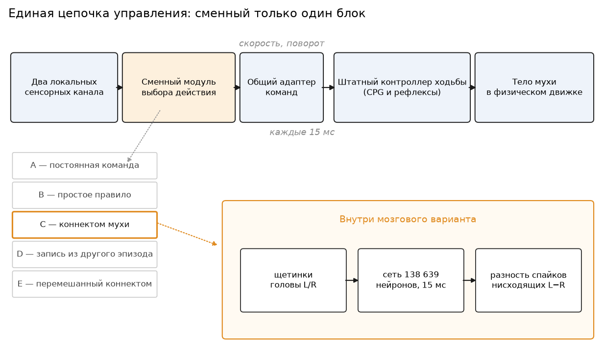
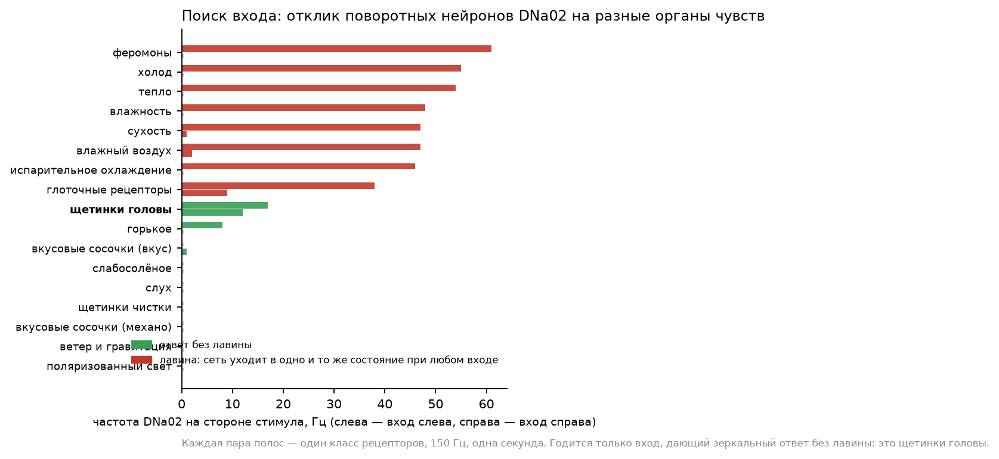
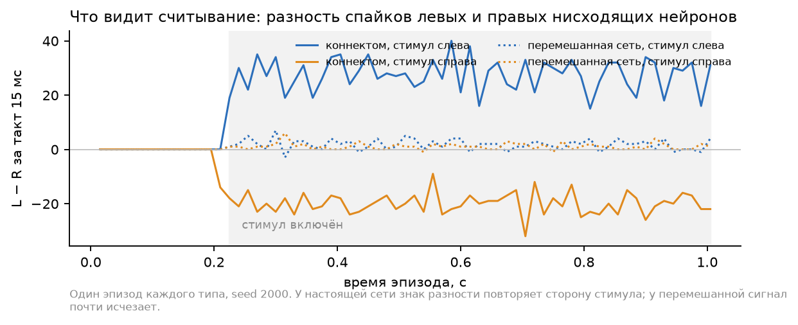
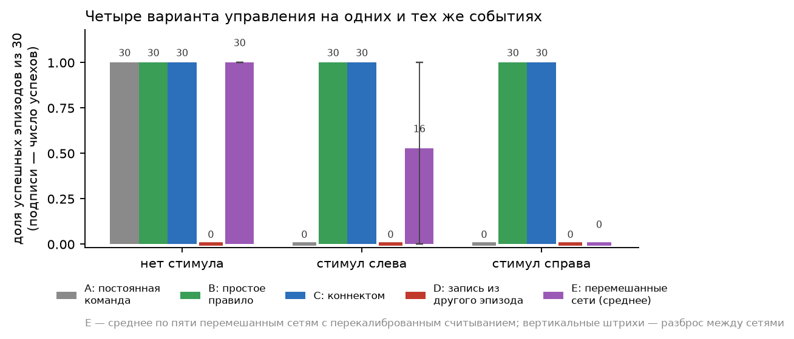
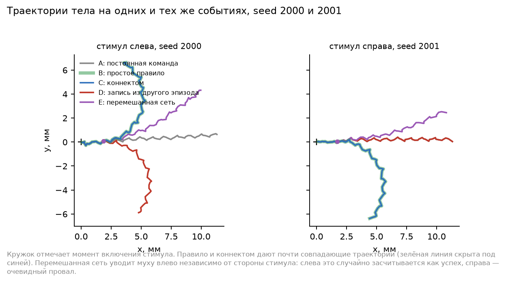
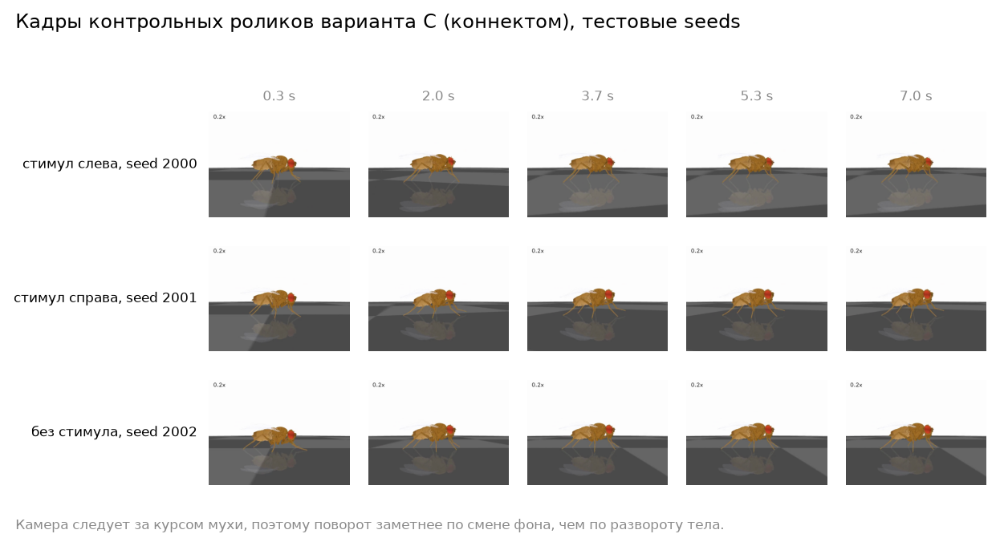

Воспроизводимый эксперимент на модели NeuroMechFly и полной карте связей мозга дрозофилы
Коротко. Мы взяли физическую модель мухи, у которой есть настоящее тело с шестью ногами, и полную карту связей мозга дрозофилы — 138 639 нейронов и 15 миллионов соединений, восстановленных по электронной микроскопии. Мы поставили их в одну упряжку и спросили: что именно даёт мозг, если тело и низкоуровневый контроллер ходьбы у всех вариантов одинаковые?
Ответ получился из трёх частей. Красивая походка мозгу не обязана ничем: её обеспечивает готовый двигательный контроллер. Живой отклик сети на текущую обстановку необходим — если подменить выход мозга записью из другого эпизода, поведение рассыпается полностью. Структура связей тоже имеет значение: пять сетей, у которых мы перемешали проводку, сохранив все степени вершин и все веса, теряют способность различать сторону раздражителя. Но в наших задачах коннектом не показал никакого преимущества перед контроллером из двух строк кода — обе схемы решают их одинаково идеально.
Осенью 2026 года в интернете снова стало модно говорить, что мозг дрозофилы «загружен» в компьютер и управляет виртуальным телом. Ролики выглядят убедительно: муха бодро перебирает лапками, поворачивает, останавливается. Проблема в том, что из такого ролика невозможно понять, кто именно всем этим управляет.
Дело в том, что в подобных сборках всегда есть два независимых механизма. Первый — низкоуровневый контроллер ходьбы: набор связанных осцилляторов и рефлексов, который умеет переставлять шесть ног в правильном порядке, ловить равновесие и не давать мухе упасть. Он написан людьми, отлажен на реальных записях походки и работает сам по себе, без всякого мозга. Второй — собственно нейронная сеть по коннектому, которая должна решать, куда и когда идти. Красота походки на видео — почти целиком заслуга первого. Вопрос о том, что добавляет второй, требует отдельного и довольно занудного эксперимента.
Мы такой эксперимент поставили. Важная оговорка с самого начала: это проверка нашей собственной реализации похожей архитектуры, а не воспроизведение чьей-то конкретной системы. Ни исходного кода, ни параметров, ни ручных сопоставлений нейронов у нас не было, и отрицательные результаты нельзя переносить на чужие сборки.
Мы разделили один расплывчатый вопрос «работает ли мозг мухи» на три чётких:
Тело — NeuroMechFly, детальная физическая модель дрозофилы: сегментированные ноги, суставы с реалистичными пределами, контакт лапок с поверхностью, липкость подушечек. Мы взяли её через библиотеку FlyGym версии 1.3.2 (прежний интерфейс, для которого доступны подробные примеры контроллеров) и не меняли ни одной строчки в самом контроллере ходьбы. Шаг физического движка — 0.1 мс.
Мозг — модель Филиппа Шиу и коллег: каждый нейрон описан простым уравнением «накопил заряд, дошёл до порога, выстрелил, обнулился», а связи между нейронами взяты из карты FlyWire, версия данных 783. Это 138 639 нейронов и 15 091 983 направленных соединений; суммарное число синапсов — 54 миллиона. Мы проверили эту таблицу целиком: соответствие индексов и идентификаторов, конечность и корректность всех весов.
Сначала мы отдельно убедились, что обе половины работают сами по себе. Штатный тест поворотов из библиотеки тела прошёл без замечаний. Мозговую модель мы воспроизвели на исходном примере из ноутбука авторов: подача сахарного вкуса на сенсорные нейроны, тридцать повторов, отклик моторного нейрона хоботка — в среднем 82.9 Гц. Ещё одна проверка оказалась важной для всего дальнейшего: мы прогнали сеть один раз непрерывно на 1005 миллисекунд и второй раз — 67 отрезками по 15 миллисекунд, и убедились, что спайки, потенциалы и синаптические состояния совпадают побитно. Это значит, что сеть можно останавливать каждые 15 мс, спрашивать её мнение и продолжать, ничего не ломая.

Честное сравнение возможно только тогда, когда между вариантами меняется ровно одна деталь. Поэтому мы собрали общую цепочку: два локальных сенсорных канала → сменный модуль выбора действия → общий адаптер команд → штатный контроллер ходьбы → тело. Адаптер принимает две безразмерные величины, скорость и поворот, и превращает их в два нисходящих сигнала для контроллера. Команда обновляется раз в 15 миллисекунд, за это время физика делает 150 шагов. Зрение выключено во всех вариантах, тело создаётся заново на каждый эпизод.
Сменных модулей пять:
Задачи намеренно короткие и простые. Эпизод длится одну секунду; в непредсказуемый для контроллера момент между 180 и 300 миллисекундами включается раздражитель — слева, справа или нигде. Успехом для поворота считается изменение курса больше 0.2 радиана в правильную сторону за полсекунды после включения; успехом для фона — отсутствие ложной команды. Отдельно проверялась остановка с горизонтом три секунды.
Все параметры, пороги и определения успеха были зафиксированы письменно до того, как мы посмотрели на тестовые результаты. Калибровочные сиды (1000–1009) и тестовые (2000–2029) разделены заранее; события генерируются отдельным генератором случайных чисел, так что варианты не могут случайно сдвинуть их, по-разному расходуя случайность. Совпадение файлов событий в каждой паре сравниваемых эпизодов проверяется по контрольной сумме.
Многое. Постоянная команда «иди прямо» даёт устойчивую походку: за секунду муха проходит 13.4 мм, ни разу не переворачивается. Заданный поворот работает в обе стороны: асимметричная команда даёт изменение курса 2.9 радиана влево или 2.6 вправо за ту же секунду. Нулевая команда снижает скорость с 15 мм/с почти до нуля.
Иначе говоря, всё, что производит впечатление на видео — ритмичная перестановка ног, устойчивость, плавные повороты, — доступно без единого нейрона из коннектома. Это не упрёк ни модели, ни коннектому: так и задумано, ходьба у насекомых во многом действительно управляется генераторами ритма в брюшной нервной цепочке, а не мозгом. Но это значит, что судить о вкладе мозга по красоте походки нельзя.
Правило B на тех же задачах оказалось безупречным для поворотов: 30 успехов из 30 в каждую сторону против нуля у постоянной команды. А вот строгую остановку — удержание скорости ниже 1 мм/с на протяжении 150 миллисекунд — оно выдержало лишь в 13 случаях из 30. Правильно выбрать команду «стой» и физически затормозить шестиногое тело — разные вещи.
Об одной пойманной ошибке. Первая версия критерия остановки требовала десяти последовательных отсчётов с шагом 15 мс, что на самом деле покрывает не 150, а 135 миллисекунд. Ошибку мы нашли на калибровочных данных до того, как посмотрели тестовые исходы, исправили на одиннадцать отсчётов и пересчитали заново; успех правила при этом упал с 9 из 10 до 4 из 10 на калибровке. Мы описываем это здесь, потому что такая арифметика — самый частый способ незаметно получить желаемый результат.
Самая сложная часть эксперимента — не запустить сеть, а честно найти, где у неё вход и где выход. Нельзя стимулировать выходные нейроны «командой повернуть налево», которую вычислил наш собственный код: тогда решение принимает код, а мозгу остаётся торжественно переслать служебную записку.
Первая попытка была очевидной: взять сахарные рецепторы, как в исходном примере, и читать поворотные нейроны DNa01 и DNa02, про которые из литературы известно, что они участвуют в управлении курсом. Она провалилась, причём поучительно. Левый набор сахарных рецепторов вызывал ответ моторного нейрона хоботка, но не давал ни одного спайка на поворотных нейронах. Правый набор давал спайки — и мы едва не приняли это за работающий путь.
Спасла подробная проверка. Мы прогнали семнадцать классов рецепторов, по обеим сторонам, и обнаружили у модели общее свойство: при достаточном возбуждении сеть сваливается в одно и то же состояние — около 8400 активных нейронов, полмиллиона спайков за секунду, — независимо от того, какой именно орган чувств мы раздражали. Хватает трёх входных нейронов. «Ответ» правых сахарных рецепторов оказался именно такой лавиной, а не путём от вкуса к повороту; асимметрия внутри лавины принадлежит сети, а не стимулу.

Так мы нашли рабочий вход: щетинки на голове мухи, 150 клеток слева и 155 справа. Биологически это осмысленно — прикосновение к щетинкам головы естественно связано с уклонением и поворотом, а DNa02 в литературе описан как нейрон, поворачивающий муху в свою сторону. Мы использовали это соответствие как подсказку, где искать, но проверяли его собственными измерениями, а не ссылкой.
Отдельно выяснилось, что одиночные нейроны DNa02 стреляют слишком редко: за 300 миллисекунд раздражения — два-четыре спайка, то есть в такте 15 мс почти всегда ноль. Поэтому считывание мы построили на всей популяции нисходящих нейронов: 645 слева и 646 справа. Разность числа их спайков за такт оказалась быстрым и надёжным признаком стороны — первый спайк появляется через четыре миллисекунды после включения раздражителя, а знак разности ни в одном такте не спутал сторону.

Само правило считывания — скользящее среднее разности, порог и масштаб — подбиралось перебором по небольшой сетке и только на калибровочных сидах. Критерием служило совпадение с решениями простого правила B по тактам; восемь из тридцати двух комбинаций дали стопроцентное совпадение, и мы взяли самую простую из них. После этого параметры не менялись ни разу.

| Задача | A: команда | B: правило | C: коннектом | D: запись | E: перемешанные |
|---|---|---|---|---|---|
| Нет стимула: нет ложной команды | 30/30 | 30/30 | 30/30 | 0/30 | 30/30 |
| Стимул слева: поворот влево | 0/30 | 30/30 | 30/30 | 0/30 | 0–30 |
| Стимул справа: поворот вправо | 0/30 | 30/30 | 30/30 | 0/30 | 0/30 |
Для E приведён разброс по пяти перемешанным сетям после разрешённой перекалибровки считывания. Разность C − B во всех трёх задачах равна нулю при консервативном доверительном интервале ±13.6 процентного пункта; это не доказательство эквивалентности, поскольку интервал шире заранее объявленного допуска в 5 пунктов.
Подключённый мозг справился с обеими сторонами идеально: 30 из 30 влево, 30 из 30 вправо, ни одной ложной команды без стимула. Реакция начинается в том же такте, в котором включён раздражитель, изменение курса за полсекунды составляет от 1.15 до 1.52 радиана.
И ровно тот же результат даёт правило B. Это честный ноль разницы, а не победа коннектома. Причина прозрачна: задача слишком простая. Когда правильный ответ — «поверни в сторону, где что-то происходит», для него достаточно одного бита информации, и любой механизм, который этот бит доносит, решит задачу на сто процентов. Разница между сложным и простым решателем на такой задаче принципиально не измерима.

Вариант D отвечает на второй вопрос недвусмысленно. Мы взяли выход сети из другого эпизода того же сида — то есть сигнал с той же статистикой, той же временной структурой, теми же характерными частотами, но порождённый другими событиями, — и пропустили его через то же самое считывание. Из девяноста эпизодов не удался ни один. Без стимула запись выдаёт ложные повороты; при стимуле слева или справа муха поворачивает не туда или не поворачивает вовсе.
Это значит, что успех варианта C держится именно на том, что сеть отвечает на текущую обстановку, а не на том, что её выход имеет удобную форму. Оговорка обязательна: утверждение относится к нашей сборке и к нашему способу подключения, а не к биологии мухи.
Вариант E отвечает на третий вопрос. Мы построили пять сетей, в которых все пятнадцать миллионов соединений переставлены заново, но с жёсткими ограничениями: у каждого нейрона сохранено число входящих и исходящих связей отдельно для возбуждающих и тормозных, сохранено всё множество весов, нет петель и повторов. Изменилось сто процентов пар «откуда — куда». Входные и выходные нейроны те же самые.
Перемешанные сети не молчат и не насыщаются: на раздражитель они отвечают тридцатью тысячами спайков против сорока тысяч у оригинала. Но до нисходящих нейронов сигнал почти не доходит — вместо 74–122 спайков за такт остаётся от 0.4 до 6.6, — и разница между левой и правой популяциями падает с двадцати-тридцати спайков до одного-двух, причём её знак перестаёт зависеть от стороны раздражителя.
В поведении это выглядит так: без стимула все пять сетей ведут себя безупречно (им нечем ошибиться, они молчат), при стимуле справа все пять проваливаются полностью, а при стимуле слева три сети из пяти набирают успехи. Разбор показывает, что это не реакция: у этих сетей есть слабое постоянное смещение влево, которое при стимуле любой стороны толкает муху в одну и ту же сторону; слева это случайно совпадает с критерием, справа — очевидно нет. Разрешённая перекалибровка считывания добавляет успехов слева, но создать зависимость знака от стороны входа она не может.
Сводно: разность «перемешанная минус исходная» составляет −69 процентных пунктов при исходном считывании и −47 после перекалибровки для стимула слева, и −100 пунктов для стимула справа. Иерархический бутстрэп, который пересэмплирует сначала сети, а потом эпизоды внутри сети, даёт интервалы, не пересекающие ноль.

Три вопроса получили три разных ответа, и смешивать их нельзя.
Тело ходит, поворачивает и тормозит без коннектома. Это свойство двигательного контроллера, а не признак того, что мозг не нужен: в живой мухе он тоже не отвечает за ритм шагов.
Текущая активность сети необходима для выбора действия в нашей сборке — подмена выхода записью из другого эпизода уничтожает результат полностью. Это ответ про обратную связь, а не про биологическое правдоподобие модели.
Структура связей значима при данном подключении: перемешивание, сохраняющее все степени вершин и все веса, ломает передачу сигнала к нисходящим нейронам. Но из этого не следует, что исходная сеть выполняет сложное вычисление. Задача, на которой мы это показали, линейно проста: сторона входа определяет сторону выхода. Мы показали сохранность латерализованного пути в реальной топологии и его отсутствие в перемешанной — не более того.
И главный отрицательный результат: в этих задачах коннектом не показал преимущества перед контроллером из двух строк кода. Обе схемы дают тридцать успехов из тридцати. Заранее объявленный допуск практической эквивалентности в пять процентных пунктов при тридцати сидах недостижим — интервал получается шире, — так что говорить о доказанной эквивалентности тоже нельзя. Задача просто слишком лёгкая, чтобы различить участников.
Список незакрытого стоит того, чтобы его привести целиком, потому что именно он определяет ценность выводов.
Сценарии остались самыми простыми: короткие эпизоды, раздражитель включается и больше не выключается. Мы не проверяли исчезновение стимула, изменение его силы и длительности, конфликт между входами, шум и пропуски сигнала, навигацию к цели, новые начальные положения, неровную поверхность и толчки. Именно на этих сценариях простое правило и коннектом могли бы разойтись, и именно они — очевидное продолжение.
Остановка для мозговых вариантов заблокирована: у нас нет проверенного нейронного выхода, отвечающего за скорость. Сахарный вход к моторному нейрону хоботка остаётся гипотезой, а объявить его «нейроном остановки» ради красивой таблицы было бы подгонкой.
Мозговой проход в текущих сценариях считается отдельно от тела. Для внешних раздражителей, не зависящих от движения, это строго эквивалентно чередованию — мы это проверили, совпадение побитное. Но для сценариев с контактной обратной связью понадобится настоящий совместный цикл.
Наконец, мы не строили нейросетевой контроллер как отдельного участника, не реализовывали питание и чистку и не включали зрение. Всё это оговорено в протоколе как второй этап.
Все результаты лежат в каталоге results/: конфигурации, версии всех пакетов, контрольные суммы исходных таблиц, идентификаторы использованных нейронов, поэпизодные траектории, логи, сводки и команды повторного запуска. Каждый прогон помечен уникальным именем и никогда не перезаписывает чужие данные. Точные версии исходных репозиториев зафиксированы по хешам коммитов: модель мозга — 91bdd1e7, тело — d285260a, официальные аннотации нейронов — 8587524c.
Суммарно вычислений: 1464 эпизода тела (21.3 часа процессорного времени) и 724 прогона мозга (4.1 часа). Всё считалось на процессоре; видеокарта не использовалась.
Отдельно подчеркнём то, что легко потерять при пересказе: это эксперимент над нашей собственной сборкой. Он не проверяет ни сознание, ни «загрузку мозга», ни чьи-либо чужие результаты, и неудача нашего подключения не является отрицательным результатом о биологическом коннектоме.